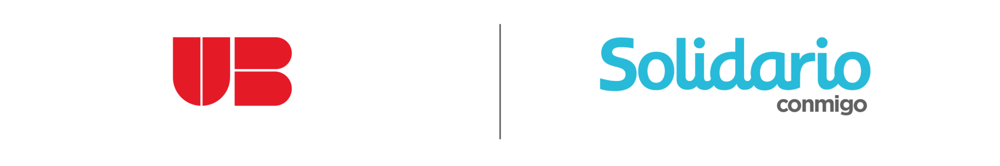
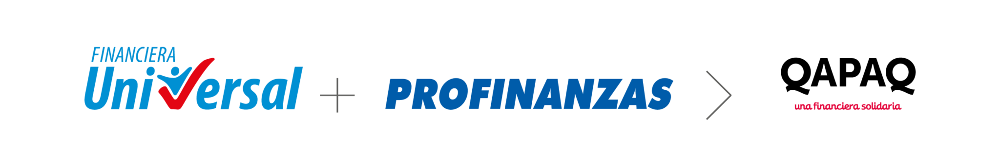

Financiera QAPAQ es una institución peruana de capital extranjero, regulada por la Superintendencia de Banca, Seguros y AFP, que inició sus operaciones en Enero del 2010 bajo el nombre de Financiera Universal con una visión, misión y modelo de negocios similares a las de sus predecesores en Ecuador, Banco Solidario y Unibanco.
En el año 2012 adquiere la Caja Profinanzas, fusionando sus operaciones para finales del año y ampliando tanto su cobertura geográfica como de oferta de productos, ya que Profinanzas era una entidad especializada en el crédito rural agrícola, con presencia en el mercado superior a 18 años.
Actualmente Financiera QAPAQ viene consolidando su posición de mercado, operando en la costa, sierra y selva central del Perú, con una red de 39 agencias, y con una de las más importantes participaciones en el segmento de microempresa.
MANUAL CODIGO DE ETICA
Financiera QAPAQ busca que el personal y los colaboradores de la institución se conduzcan bajo un régimen de transparencia y ética, para ello, el presente Código de Ética y Conducta Profesional (“Código”) procura guiar y proteger la actividad profesional del personal y los colaboradores en el ejercicio de su función o accionar, además de trazar una línea de conducta con relación a la información que manejan.
DESCARGAR MANUALCANAL DE DENUNCIAS
Financiera QAPAQ pone a disposición de sus colaboradores, clientes, proveedores y público en general el canal para remitir denuncias sobre incumplimientos al Código de Ética, actos referidos a fraudes y cualquier circunstancia irregular.
El tratamiento de la información suministrada es confidencial y la denuncia es anónima, salvo que usted voluntariamente ingrese sus datos de contacto para poder recabar mayor información de ser necesario.
Para presentar una denuncia, se requiere indicar una descripción -lo más detallada posible- de los hechos o circunstancias que le parecen sospechosas y la(s) persona(s) que estaría(n) involucradas en los hechos denunciados. También tiene la opción de adjuntar archivos como medio de prueba.
Este es un canal exclusivo para la presentación de denuncias éticas, irregularidades y actos relacionados a fraudes cometidos por nuestros colaboradores; por este canal NO se atienden consultas, requerimientos, reclamos ni sugerencias.
CANAL DE DENUNCIAS